|
СТРУКТУРА И ПРИНЦИП РАБОТЫ БИПОЛЯРНОГО ТРАНЗИСТОРА
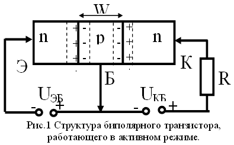
Биполярный транзистор
представляет собой полупроводниковый прибор, состоящий из трех областей с чередующимися
типами электропроводности, пригодный для усиления мощности.
Структура биполярного
транзистора представляет собой два встречно направленных p-n-перехода (рис.1). Область
транзистора, расположенную между электронно-дырочными переходами, называют базой.
Примыкающие к базе области чаще всего делают неодинаковыми. Область транзистора,
основным назначением которой является инжекция носителей в базу, называют
эмиттером, соответствующий электронно-дырочный переход — эмиттерным.
Область транзистора, основным назначением которой является экстракция носителей из базы,
называют коллектором, соответствующий электронно-дырочный переход —
коллекторным.
Данные области, обозначены соответственно как Э, Б, К на рис. 1.
Поскольку в приведенном
примере эмиттер и коллектор имеют n-тип проводимости, а база p-тип, то прибор называется
n-p-n-транзистором. При обратной полярности областей образуется p-n-p-транзистор. Как
видно на рис. 2, структура транзисторов реальных БИС отличается от схематического
изображения транзистора на рис. 1. Это обусловлено планарной технологией их
изготовления. Участок, выделенный пунктиром на рис. 3, соответствует активной области
транзистора, изображенного на рис. 1. Остальные участки структуры являются паразитными
элементами транзистора.
Основные условия для обеспечения
усилительных свойств транзистора:
Толщину базы W делают небольшой по сравнению с диффузионной
длиной неосновных носителей заряда, что снижает потери на рекомбинацию в объеме
материала. Размеры коллектора делают такими, чтобы он мог перехватить весь
поток носителей, идущих от эмиттера, т.е. площадь коллекторного перехода должна быть
значительно больше площади эмиттерного перехода (Sкп>Sэп).
Для уменьшения составляющей тока носителей, инжектируемых из базы в
эмиттер, концентрацию примесей в базе делают значительно меньшей, чем в эмиттере.
Рассмотрим работу
n-p-n-транзистора, схематично представленного на рис. 1. Расстояние W между
эмиттерным и коллекторным переходами составляет металлургическую ширину базы. Пусть
xэ~расстояние
от конца обедненного слоя со стороны эмиттерного перехода до оммического электрода
эмиттера, а площадь поперечного сечения транзисторной структуры S постоянна вдоль
оси x. К эмиттерному и коллекторному переходам приложены напряжения
Uбэ, Uбк.
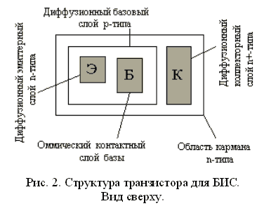
Предположим, что
концентрация примесей Nэ, Nб, Nк в областях
эмиттера, базы и коллектора на эмиттерном и коллекторном переходах меняются ступенчато,
причем Nэ, Nк~концентрации доноров, а Nб~концентрации
акцепторов. На обоих переходах образуются обедненные слои. За начало отсчета вдоль оси
x (x=0 ) примем границу обедненного слоя эмиттерного перехода со стороны
базы. Тогда xб~границе обедненного слоя коллекторного перехода со
стороны базы. В пределах 0<=x<=xб расположена электрически нейтральная
область базы.
В базовой области
присутствуют и электроны, и дырки. Их реальное поведение достаточно сложно, и точный
анализ выполняется численными методами. Однако для понимания сути работы транзистора
целесообразно представить физические явления с помощью аналитических методов расчета на
основании использования различных аппроксимаций. При анализе работы прибора обычно
используют также допущения и приближения, которые облегчают понимание происходящих
процессов. Уровень допустимых приближений зависит от того, с какой точностью требуется
объяснить реальные характеристики транзистора. Разберем сначала работу транзистора на
простейшей модели, а затем уточним теорию введением некоторых дополнительных
условий.
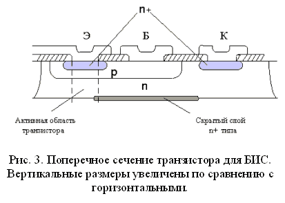
Обратимся к электрически
нейтральной базовой области транзистора на рис. 1. В этой области при любом режиме
электрического смещения дырочный ток крайне мал. Это объясняется тем, что с обеих сторон
от базовой области p-типа расположены области n-типа, в которых концентрация дырок очень
мала, и они не поступают в базовую область. Поэтому предположим, что дырочный ток равен
нулю. Напряженность поля E в нейтральной базовой области определяется выражением:
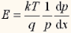 (1), где p~концентрация
дырок в базе.
Для простейшей модели будем
считать, что концентрация дырок в базовой области равна концентрации акцепторов.
Следовательно, при равномерном распределении концентрации акцепторов напряженность
электрического поля в базовой области равна нулю, т. е. E=0. Однако базовые
области транзисторов для БИС обычно изготавливают методом диффузии примеси и
концентрация акцепторов в базе велика у эмиттера и мала у коллектора. При этом в базе
возникает отрицательное электрическое поле. Кроме того, при высоком уровне инжекции под
влиянием инжектированных электронов концентрация дырок будет отличаться от концентрации
акцепторов. Для учета этого случая требуется рассмотрение более сложной задачи.
Если напряженность
электрического поля в базовой области равна нулю, то дрейфом носителей в базе можно
пренебречь. Для упрощения задачи будем считать, что процесс протекания тока определяется
только диффузией носителей, а носителями являются только электроны. Анализ работы
большинства транзисторных структур основан на этой диффузионной модели. Она позволяет
получить характеристики транзистора путем решения уравнения диффузии для неосновных
носителей (в данном случае ~ электронов) в базовой области при определенных
граничных условиях.
Разберем работу транзистора
без непосредственного решения уравнения диффузии. Запишем плотность электронного тока
Jn в базовой области:
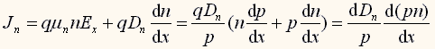 (2).
Направление протекания тока Jn от эмиттера к коллектору будем считать
положительным. Второе выражение в (2) вычислено с использованием уравнения Эйнштейна и
формулы (1). Если преобразовать третье выражение из (2) и проинтегрировать его в
пределах от x=1 до xб, то получим:
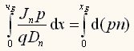 (3).
Предположим, что электроны
проходят через базовую область без рекомбинации. Тогда величина Jn в
левой части уравнения (3) становится постоянной, не зависит от , и её можно вынести за
знак интеграла. Это предположение достаточно справедливо, если ширина базы много меньше
диффузионной длины электронов. В реальных условиях существуют потери носителей в
результате их незначительной рекомбинации. Эти потери определяют характеристики
транзистора.
Из зависимости (3) получим
следующую формулу для плотности электронного тока Jn:
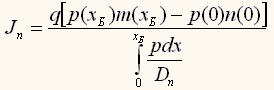 (4).
Числитель этого выражения представляет собой разность произведений концентраций
электронов и дырок на обеих границах базовой области. Иначе говоря, для вычисления
базового тока необходимо определить произведение концентраций электронов и дырок на
границах обедненных слоев p-n-переходов, к которым приложены напряжения смещения U.
Произведение концентраций электронов и дырок (pn) на границе обедненного слоя смещенного
p-n-перехода обычно выражается формулой:
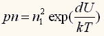 (5).
При малом уровне инжекции концентрация основных носителей практически соответствует их
концентрации в состоянии теплового равновесия. С учетом (5) плотность электронного тока
(4) запишется в виде:
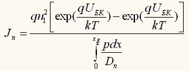 (6).
Это выражение представляет собой формулу для электронного тока, протекающего в базовой
области от эмиттера к коллектору, если пренебречь дырочным током и рекомбинацией
электронов в базовой области. Оба допущения справедливы, когда базовый ток равен нулю,
что отличается от реальной ситуации. Однако для достаточно малых величин базового тока
реальные характеристики транзистора хорошо согласуются с расчетной зависимостью
коллекторного тока от напряжения Uбэ, Uбк.
Если обозначить
Qб суммарный электрический заряд в базовой области,
Dn — средний коэффициент диффузии электронов, S —
площадь поперечного сечения структуры, то из выражения (6) электронный ток:
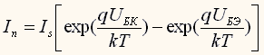 (7), где 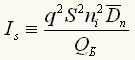 (8), 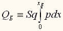 (9).
Из приведенных зависимостей
видно, что для расчета биполярного транзистора необходимо знать величину
Qб. При малом уровне инжекции концентрация дырок в базе равна
плотности акцепторов. Следовательно, для расчета транзистора важно знать общее
количество акцепторов в базовой области:
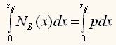 (10).
Эта величина носит название число Гуммеля и является одним из важных параметров
биполярного транзистора. Чем меньше число Гуммеля, тем больше величина Is
и лучше рабочие характеристики транзистора.
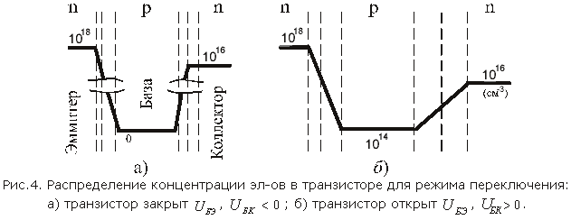
Для описания работы
транзистора воспользуемся выражением (7). Сначала рассмотрим работу транзистора в режиме
переключения. Ясно, что при отрицательных значениях Uбэ,
Uбк (обратное смещение) Is~0 и транзистор
закрыт, а при положительных значениях , через базу протекает ток и транзистор открыт, т.
е. происходит переключение прибора. Распределение концентрации неосновных носителей для
режима переключения схематично изображено на рис. 4. Концентрация неосновных носителей
на границах обедненных слоев определяется по формуле (5) и соответствует значениям,
приведенным на рисунке.
Как видно на рис. 4б, в
открытом состоянии концентрация неосновных носителей в базе высока. При подаче
отрицательных напряжений Uбэ, Uбк концентрация
инжектированных неосновных носителей не уменьшается мгновенно. В течение некоторого
времени через базу продолжает протекать ток и транзистор остается открытым. Этот процесс
называется эффектом накопления неосновных носителей, а его длительность примерно равна
времени накопления. Для повышения скорости переключения транзистора время накопления
необходимо уменьшать. Это можно сделать, например, за счет уменьшения времени жизни
носителей в базовой области путем формирования в процессе изготовления транзистора
неравномерного распределения примеси в базе. Под действием электрического поля,
обусловленного таким распределением, неосновные носители с высокой скоростью будут
дрейфовать из базы.
Кроме того, уменьшить время накопления можно схемными методами. Для этого p n переходы
транзистора шунтируются диодами Шоттки, ограничивающими высокие положительные напряжения
Uбэ, Uбк. При этом в открытом состоянии транзистора
концентрация неосновных носителей в базе не достигает слишком большой величины и при
переключении требуется меньше времени для удаления этих носителей из базы. Далее
предположим, что Uбк~отрицательно, а Uбэ~положительно.
Тогда, считая, что ток коллектора Iк протекает по транзистору в
положительном направлении (рис. 1) и, пренебрегая в уравнении (7) членом с
Uбк, получим:
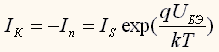 (11).
Из этой формулы видно, что небольшое изменение Uбэ приводит к
значительному изменению Iк. Хотя эмиттерный переход, смещенный в
прямом направлении, имеет малое сопротивление, а обратно смещенный коллекторный переход
— высокое сопротивление, через коллекторный переход протекает ток, равный
эмиттерному. Это означает, что сигнал переменного напряжения, подаваемый между эмиттером
и базой, усиливается на выходе между коллектором и базой. В таком режиме транзистор
работает как усилительный элемент. Распределение концентрации неосновных носителей для
этого случая схематически изображено на рис. 5.
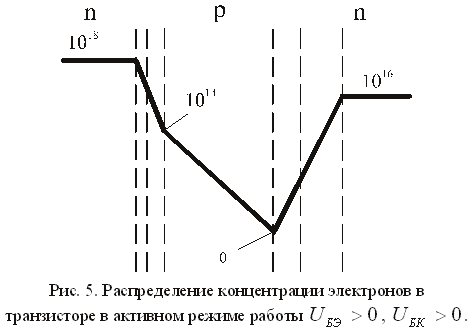
Для наглядности в базовой
области распределение концентрации представлено в линейном масштабе, а в других областях
в логарифмическом.
Поскольку эмиттерный переход
смещен в прямом направлении, то концентрация электронов со стороны этого перехода в
exp(Uбэ/kT)
раз больше концентрации в состоянии теплового равновесия. Со стороны коллектора
концентрация электронов близка к нулю, т. к. Uбк отрицательно. Под
действием ускоряющего электрического поля в коллекторном переходе электроны быстро
переходят из базы в коллектор. Если рекомбинация электронов отсутствует, то концентрация
электронов в базе уменьшается линейно. Такой режим электрического смещения называют
активным режимом работы транзистора. Типичные параметры биполярных n-p-n-транзисторов
полупроводниковых ИС таковы: коэффициент усиления тока базы около 200, граничная частота
до 500 МГц, емкость коллектора до 0,5 пФ, пробивное напряжение для коллекторного
перехода до 50 В, для эмиттерного до 8 В.
Удельное сопротивление n- и p-слоев составляет несколько сотен, а n+-слоев не
более 20 Ом.
ВАХ биполярного транзистора
Если обозначить напряжение и
ток входного электрода транзистора через U1 и I1, а
напряжение и ток выходного U2 и I2, то взаимосвязь
этих четырех величин можно выразить двадцатью четырьмя семействами характеристик,
относящихся к шести системам. В качестве основных удобно выбирать семейства
характеристик, связывающих ток и напряжение на входе — входные
характеристики, и ток и напряжение на выходе — выходные
характеристики.
Общая База
| Входные характеристики |
Выходные характеристики |
| 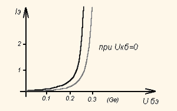 |
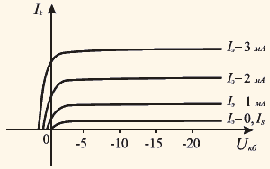 |
Общий Эмиттер
| Входные характеристики |
Выходные характеристики |
| 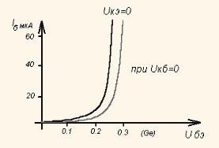 |
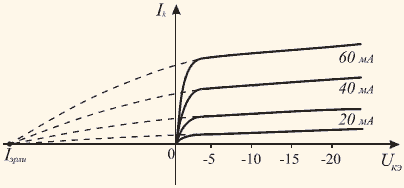 |
Эквивалентные схемы транзистора
Под эквивалентной схемой
понимают электрическую схему, составленную из линейных элементов электрических цепей
(сопротивлений, емкостей, индуктивностей, генераторов тока или напряжения), которая по
своим свойствам при данном сигнале не отличается от реального объекта (транзистора).
За основу построения обычно
берут формальную эквивалентную схему идеализированного транзистора, называемого одномерной
теоретической моделью (упрощенная схема).
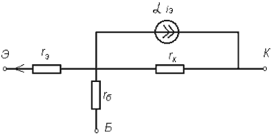
Здесь rэ
— сопротивление эмиттерного перехода, оно дифференциальное, rэ=10÷30
Ом; rк — сопротивление обратно смещённого КП, оно также
дифференциальное rк=400÷1000 кОм; rб —
объёмное сопротивление базы; α — коэффициент передачи тока эмиттера в
схеме с общей базой; αiэ — управляемый источник
коллекторного тока.
Эквивалентная схема Эберса - Мола (нелинейная эквивалентная схема
транзистора)
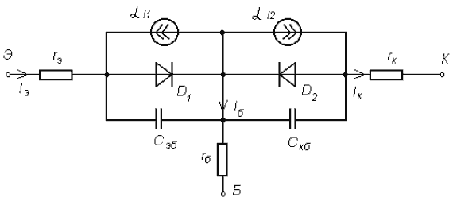
Здесь rэ,
rб, rк — объёмные сопротивления областей эмиттера, базы и
коллектора. rб — наиболее существенное (т.к. база
слаболегирована). D1, D2 — отображают ЭП и КП (диоды).
C1, C2 — ёмкости p-n переходов. αi1,
αi2 — управляемые источники тока.
Полезно знать
| Условное обозначение транзистора |
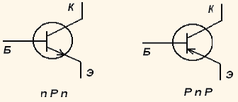 |
| Эмитерный переход |
Коллекторный переход |
Режим работы |
Активный режим работы используют для усиления и
генерирования сигналов.
Режимы насыщения и отсечки используется в ключевых
устройствах, в логических и цифровых ИС
Инверсный практически не используется или используется
очень редко.
|
| Прямое |
Обратное |
Активный, усилительный |
| Прямое |
Прямое |
Насыщение |
| Обратное |
Прямое |
Инверсный |
| Обратное |
Обратное |
отсечки тока |
Схемы включения транзистора (активный режим работы)
| 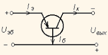 |
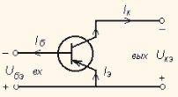 |
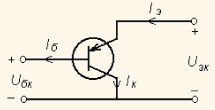 |
| Схема с общей базой |
Схема с общим эмиттером |
Схема с общим коллектором |
Усиление мощности транзистором
| 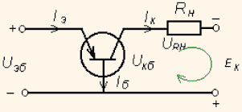 |
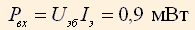
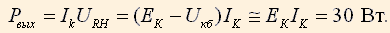
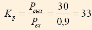, Kp
— коэффициент усиления.
|
Рекомендуемая литература:
- Зи С. Физика полупроводниковых приборов.в 2-х т., М., Мир, 1984.
- Пасынков В.В., Чиркин Л.К. Полупроводниковые приборы М. Энергоатомиздат.
- Тугов Н.М., Глебов Б.А., Чарыков Н.А. Полупроводниковые приборы. М. Энергоатомиздат.
- Шалимова К.В. Физика полупроводников. М. Энергоатомиздат. М. МЭИ(ТУ). 1997.
|